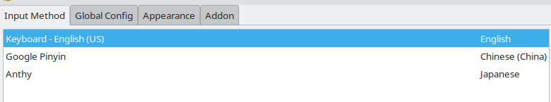
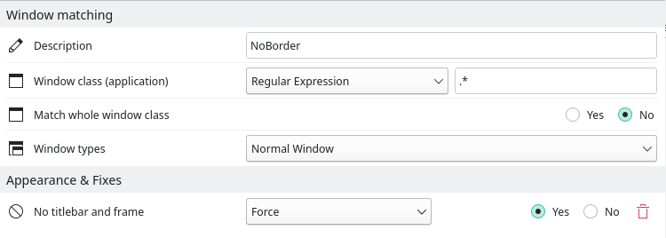

How to deploy an overpowered manjaro linux for using conveniently
Contents:
一. 下载、安装与更新
1. 准备供刻录使用的U盘
2. 下载 manjaro linux 镜像文件并刻录启动盘
3. 安装系统
二. 装完系统后的一些要紧事
1. 更新软件源与软件包
2. 安装输入法-fcitx
3. 小结
三. 个性化工作
1. 删除 manjaro-zsh-config 软件包
2. KWin Shortcuts 配置
3. 设置个性 Window Rules
4. 编辑器-vim
4. 编辑器-nvim
5. 命令行解释器-bash
5. 命令行解释器-zsh
6. 终端模拟器-st
7. 文件管理器-ranger
一. 下载并安装系统
1. 准备供刻录使用的U盘
一. 下载并安装系统
1. 准备供刻录使用的U盘
默认此U盘为已启用过的, 因此需对此盘进行去分区和格式化处理.
以 linux 系统为例, 插入U盘后使用 fdisk 命令进行分区检查和去分区操作, 如下:
sudo fdisk -l #分区检查
sudo fdisk /dev/sdb #去分区操作注: 删除分区时, 只剩最后一个分区 sdb1 时也要继续删除, 否则只有此分区能被识别, 此分区之外的存储空间将被隐藏!
删除旧分区后, 使用 mkfs 命令进行格式化操作, 如下:
sudo mkfs.ext4 /dev/sdb #ext4文件格式至此, 供刻录使用的U盘准备完毕.
2. 下载 manjaro linux 镜像文件并刻录启动盘
在 manjaro linux 官网下载最新镜像文件, 推荐 OFFICIAL EDITIONS 里的 Plasma Desktop, 因为 KDE/Plasma 桌面环境更加整洁、方便.
接下来刻录启动盘( 各系统都有可查的方法 ). 以 linux 系统为例, 找到下载后的 manjaro linux 系统镜像文件, 在其所在的文件夹使用 dd 命令进行刻录, 如下:
sudo dd if=manjaro-kde-21.3.3-220712-linux515.iso of=/dev/sdb bs=4M注: 根据下载的文件对上述代码中使用到的文件名进行替换!
等待命令执行结束, 启动盘刻录完成.
3. 安装系统
提前了解使电脑进入 BOOT MANAGER 或 BIOS 页面的热键( 不同类型的电脑热键不同, 可查 ). 准备就绪后, 插入U盘, 启动电脑, 此时高频按压热键进入 BOOT MANAGER 页面, 在 EFI 列表中选择以 USB 启动系统引导即可进入U盘中的 manjaro linux 系统.
在桌面点击 Install Manjaro Linux 图标并按照引导完成前期工作至系统分盘与节点挂载.
此时可以选择 默认选项 让系统自身完成所需工作, 但如果想更好地管理系统盘, 可以依照如下分盘建议进行手动分盘:
| Order | Size | File System | Mount Point | Flags |
| 1st | 300MiB | FAT32 | /boot/efi | boot |
| 2nd | 102400MiB | ext4 | / | |
| 3rd | 8192MiB | linuxswap | swap | |
| 4th | 122880MiB | ext4 | /home | |
注: 第一第三项的 Size 同表格, 第二第四项的 Size 可以根据系统盘随意做调整. 原则上分配完后系统盘留有部分( 10GiB左右 )的空闲存储空间.
之后继续按照引导完成后期工作, 安装完毕后关机, 拔掉U盘重新开机, manjaro linux 系统至此已安装完成.
二. 装完系统后的一些要紧事
1. 更新软件源与软件包
Arch分支的软件源服务器分布在世界各地, 为尽可能提速, 我们需要寻找就近的服务器作为默认软件源, 命令如下:
sudo pacman-mirrors -i -c China -m rank随后系统会把附近的软件源按下载速度进行排列, 选取速度最快的软件源即可.
选择完默认软件源后, 可以使用 pacman 命令更新软件源和软件包了, 如下:
sudo pacman -Syyu等待命令执行结束, 软件源和软件包更新完成.
2. 安装输入法-fcitx
输入法是与系统无碍交互的前提, 系统安装完成后的首要任务就是安装输入法, 先通过 pacman 命令安装 fcitx, 如下:
sudo pacman -S fcitx-im
sudo pacman -S fcitx-configtool其次根据自己的需求安装不同语言的输入法, 举例如下:
sudo pacman -S fcitx-googlepinyin #中文拼音
sudo pacman -S fcitx-anthy #日本语
sudo pacman -S fcitx-hangul #韩国语在用户的家目录( $HOME )创建 .xprofile 文件并写入如下代码:
export GTK_IM_MODULE=fcitx
export QT_IM_MODULE=fcitx
export XMODIFIERS="@im=fcitx"目的是让 fcitx 输入法应用在系统内的任何软件中. 重启后可以看到输入法图标, 右键点击即可配置.
另外, 当使用快捷键进行输入法间的切换时, 需要理解 figure.1 里的提示才能使用准确.
默认情况下, 输入法处于关闭状态, 由于输入英文字母不需要依赖第三方输入法, 因此需要将英文输入法放在第一位来占据"未激活位", 从第二位开始就是需要激活后才能使用的输入法. 正确排列如 figure.2 所示.

CTRL+ SPACE 是输入法激活键, 使用后输入法被激活或关闭,默认情况下第二位输入法首先被激活.
CTRL+SHIFT 是输入法切换键, 使用后可以进行输入法间的切换, 即从第二位开始轮替切换.
3. 小结
至此, 一款以 manjaro linux 为内核, 以 KDE/Plasma 为桌面环境的的裸机系统已装配完成.
但是裸机系统使用困难、功能障碍、高度同质化, 为了将其打造成使用更方便、功能更强大、高度自定义化的系统，我们需要做大量个性化的工作, 包括:
- 调整和清除: 调整现有桌面环境使其更便捷、清除系统安装之初就存在的冗余软件或配置
- 安装和配置: 安装功能强大的新软件并根据自我喜好进行个性化配置
三. 个性化工作
注: 个性化工作的每一项都不是必做的且每一项配置也都不是必须相同的, 可以根据自身的爱好与需求调整.
注: 序号相同的项目为互可代替的项目, 选取一个项目即可.
1. 删除 manjaro-zsh-config 软件包
我发现在最新版本的 manjaro linux KDE/Plasma 中系统默认在 /usr/share 目录安装了 zsh 的主题与配置, 但配置文件混乱不堪、来回嵌套, 严重影响我们对 zsh 配置文件的管理与移植. 使用 manjaro linux KDE/Plasma 近1000天, 这是我目前遇到的最恶臭的官方行为.
利用 pacman 卸载默认的 zsh 配置包, 命令如下:
sudo pacman -Rns manjaro-zsh-config在删除 manjaro-zsh-config 包时, nerd fonts 图标会被一同删除, 为保证所有程序中图标都能正常显示, 我们需要下载 nerd fonts 图标, 推荐版本如下:
sudo pacman -S ttf-nerd-fonts-symbols2. KWin Shortcuts 配置
窗口行为快捷键配置参考如下:
| Behavior | Shortcuts |
| Quick Tile Window to the Bottom / Left / Right / Top | Meta + Down / Left /Right / Up |
| Maximize / Minimize Window | Meta + PgUp / PgUpDown |
| Switch to Window Above / Below / the Left / the Right | Meta + Alt + K / J / H / L |
3. 设置个性 Window Rules
在 System Settings-Window Management-Window Rules 里设置个性 Rules, 例如窗口无边框:

4. 编辑器-vim
首先通过 pacman 命令安装 vim :
sudo pacman -S vim然后从我的 github 仓库获取提前准备好的配置文件.
4. 编辑器-nvim
首先通过 pacman 命令安装 nvim :
sudo pacman -S nvim然后从我的 github 仓库获取提前准备好的配置文件.
5. 命令行解释器-bash
首先通过 pacman 命令安装 bash :
sudo pacman -S bash然后从 github 仓库获取提前准备好的配置文件.
5. 命令行解释器-zsh
首先通过 pacman 命令安装 zsh :
sudo pacman -S zsh然后从我的 github 仓库下载配置好的配置文件.
6. 终端模拟器-st
首先通过 pacman 命令安装 st :
sudo pacman -S st然后从 suckless 官方软件源下载最新版 st 文件到本地文件夹 .config, 命令如下：
git clone https://git.suckless.org/st从 github 仓库下载配置好的配置文件, 覆盖默认配置文件.
进入 st 文件夹, 在命令行使用 make 命令来安装 st, 如下:
sudo make clean install7. 文件管理器-ranger
首先通过 pacman 命令安装 ranger :
sudo pacman -S ranger然后从我的 github 仓库获取提前准备好的配置文件.